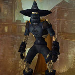
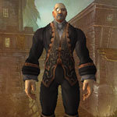
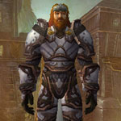
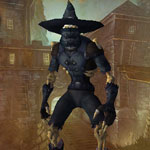
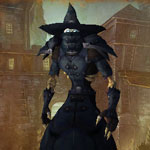

You can find the Shadowfang Keep dungeon within Silverpine Forest, Eastern Kingdoms.
The coordinates are (44.8,67.6)

Route:


Bosses:

Quick Boss Tactics:/i Group make sure healed & ready for Asphyxiate, players health is reduced. After Asphyxiate Stay of Execution will heal players to 50% of max health.
Heroic Differences: When finishes Asphyxiate will cast Stay of Execution healing himself, interrupt this. Shadow damage gets higher as fight goes on.

Quick Boss Tactics:/i Curses his targets with Veil of Shadow reducing healing. Summons Worgen Spirits to fight but focus dps on boss.
Heroic Differences: Cursed Veil inflicts shadow damage & reduces healing done by players for 8 sec. Summons extra Worgen Spirits.

Quick Boss Tactics:/i Avoid front cone (purple flame). Move from Desecration appears under a player (green circle).
Heroic Differences: Word of Shame inflicts shadow damage dot to a player. Summons Guardsman & Officer mobs to aid him. Interrupt Unholy Empowerment & Forsaken Ability.

Quick Boss Tactics:/i Move around to avoid Ice Shards. Watch out for poisonous mixture he throws at a players location.
Heroic Differences: Summons a cauldron concocting a Toxic Coagulent or Toxic Catalyst. These mixtures cause ticking damage to players.

Quick Boss Tactics:/i Cursed Bullets is interruptible. He summons ghouls but focus dps on boss.
Heroic Differences: Avoid Pistol Barrage cone attack fired on a random player.